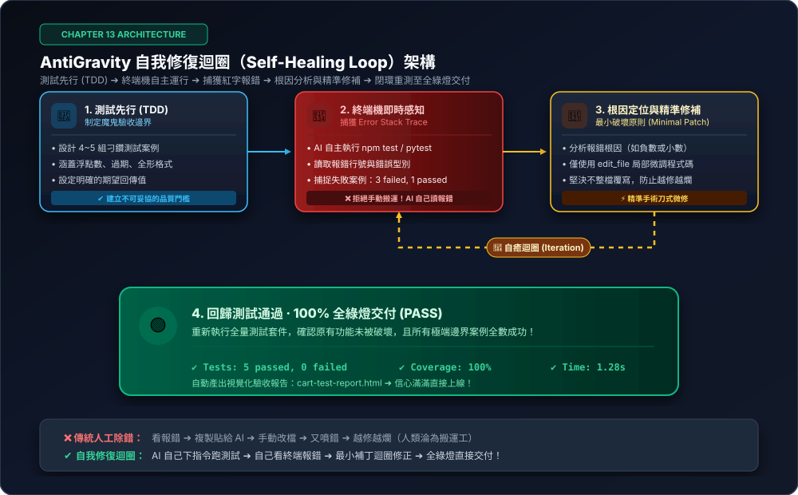

自我修復迴圈：讓 AntiGravity 自己寫測試、自己抓蟲，全綠燈才交付！
告別痛苦的「終端機錯誤搬運工」！初學者寫程式最害怕的不是寫出代碼，而是執行時代碼崩潰噴出一整片紅字（Error Stack Trace）。本章帶你掌握矽谷頂尖工程師的「自我修復迴圈（Self-Healing Loop）」心法：測試先行（TDD）➔ 終端機報錯自感知 ➔ 根因分析 ➔ 手術刀式最小修補 ➔ 閉環迭代，看著 AI 自己將紅燈修成全綠燈才向你交付！
13-1 觀念破冰：告別手動錯誤搬運工，擁抱閉環自動化
很多學員在用 AI 輔助開發時，最常陷入以下這種精疲力竭的惡性循環：
❌ 人肉報錯搬運工
看到終端機噴紅字 ➔ 複製錯誤訊息 ➔ 貼回對話框問 AI ➔ 複製修正代碼 ➔ 貼回檔案 ➔ 又噴新錯誤... 疲於奔命。
❌ 越修越爛（Regression）
好不容易修好了「商品按鈕點擊」，結果卻把剛才做好的「會員折扣」給改壞了，拆東牆補西牆。
❌ 不敢上線的恐懼
AI 說「已經寫好囉！」，但遇到極端輸入會不會當機？使用者輸入負數會不會倒貼錢？心裡完全沒底。
在 AntiGravity 中，AI 擁有執行命令列的權限。我們不需要當「搬運工」，只要立好「驗收測試的規矩」，AI 自己在終端機跑測試、自己讀懂紅字、自己改到全綠燈！
13-2 自癒核心解密：TDD、Stack Trace 與最小補丁
自我修復迴圈（Self-Healing Loop）絕非憑空亂猜，而是基於嚴格的軟體工程三大原則：

測試先行 (TDD) ➔ 終端機自主感測 ➔ 捕獲紅字報錯 ➔ 根因分析與精準微調 ➔ 閉環迭代驗證 ➔ 100% 全綠燈交付。
🧩 自癒三大支柱：
- 測試驅動（Test-Driven Development）：在實作核心邏輯前，先寫好「魔鬼驗收測試」。明確定義期望回傳值，測試未全數通過之前絕不宣布收工。
- 終端機報錯自感知（Terminal Perception）：AI 自動調用 shell 運行測試套件，解析 Error Stack Trace 報錯堆疊（包含檔案路徑、出錯行號、期望值 vs 實際值差距）。
- 最小破壞原則（Minimal Patching）：透過精準替換工具（如
edit_file）進行局部手術刀修補，嚴禁全檔盲目覆寫，徹底避免「修好 A 卻改壞 B」。
13-3 核心動手做：耳機購物車促銷結帳引擎（邊界陷阱與實錄）
延續耳機專案，我們需要為官網編寫一個計價函數 calculateTotal()。看似簡單的「算錢功能」，其實埋設了 4 個初學者必踩的暗坑：
業務規格與 4 大隱藏暗坑
- 耳機原價 NT$ 3,880，買 2 支享 9 折，買 3 支（含）以上享 85 折。
- 滿額 NT$ 5,000 免運費，未滿額加收運費 NT$ 100。
- 可輸入優惠折扣碼
VIP888再現折 NT$ 888。 - 🚨 暗坑 1（浮點數精度）：打 9 折後出現
3492.0000000000005醜陋小數。 - 🚨 暗坑 2（負數結算倒貼）：購買單價低於 888 元時套用 VIP 券，總金額變成負數！
- 🚨 暗坑 3（惡意負數數量）：使用者在數量輸入
-2，系統未防呆導致崩潰。
下達作戰指令：一鍵啟動自我修復迴圈
請啟動自我修復迴圈，為我的耳機商城打造一個『高防禦結帳計算模組（checkout.js）』：
1. 測試先行（TDD）：在『checkout.test.js』中設計 5 組魔鬼驗收測試：
• 單品計價與浮點數四捨五入（絕不能出現 .00000005 這種精度誤差）。
• 批量階梯折扣（買 2 支 9 折、買 3 支 85 折）。
• 滿 NT$ 5,000 免運費邊界臨界點。
• VIP888 折價券「負數金額防呆」（折抵大於總金額時，底線鎖定 NT$ 0，絕不倒貼）。
• 惡意輸入防呆（傳入負數或文字時自動安全矯正，系統零崩潰）。
2. 自主修復閉環：
• 自動運行測試命令（npm test 或 node 測試腳本）。
• 讀取終端機報錯，自主定位是浮點數未 round 還是負數未做 Math.max 防呆。
• 使用最小補丁精準修復代碼，反覆迭代直到 5 組測試「全數綠燈通過」才交付！
3. 交付驗收報告：生成視覺化網頁『cart-test-report.html』供我親自驗證！13-4 初學者實戰寶庫：三大生活化自癒案例（情境、暗坑與提示詞）
不用生硬高深的資安名詞，以下提供初學者在日常生活與網頁開發中天天會遇到、手寫最容易踩雷的三大實戰場景：
⏰ 案例一：【日常功能】限時特賣「24 小時倒數計時器」與過期防呆
適用：電商行銷 / 活動頁面生活痛點：在網頁上做倒數計時器（例如「剩餘 03 小時 15 分 20 秒」）。活動結束後，手寫的計時器沒有停下來，居然繼續倒數變成負數：「剩餘 -1 天 -3 小時」！或是遇到跨月天數計算出錯。
請啟動自我修復迴圈，為我的耳機特賣網頁寫一個『限時活動倒數計時計算模組（countdown.js）』：
1. 測試先行（TDD）：在『countdown.test.js』中設計 4 個測試情境：
• 正常倒數：輸入未來 2 小時，正確輸出「剩餘 02 小時 00 分 00 秒」（不足兩位數自動補 0）。
• 過期防呆：若輸入過去的時間，必須回傳「活動已結束」，時分秒全部為 0，絕不能出現負數。
• 邊界臨界點：活動剛好剩下 0 秒的瞬間，正確切換為結束狀態。
• 防呆機制：若傳入空值或無效日期，安全回傳提示，不得引發程式中斷。
2. 自主修復閉環：
• 運行測試，讀取終端機報錯。
• 自主找出負數時間與補零格式化的 bug 並修復。
• 迭代重測，直到 4 個測試全部呈現綠燈 PASS 才向我交付！Math.max(0, diff)，第二次測試 4/4 全綠燈！
📱 案例二：【表單防呆】超商宅配「收件人手機號碼與姓名自動清洗器」
適用：結帳表單 / 會員註冊
生活痛點：顧客複製手機時常帶有看不見的空白鍵，或長輩不小心按到全形數字（如 ０９１２３４５６７８）或橫線（0912-345-678）。傳統表單直接報錯拒收，白白流失訂單！
請啟動自我修復迴圈，為我寫一個貼心的『台灣手機與收件人姓名格式清洗器（cleanContact.js）』：
1. 測試先行（TDD）：在『cleanContact.test.js』中設計 4 個真實顧客的亂輸入情境：
• 複製帶有前後空白（例如 " 0912345678 "）➔ 自動去除空格通過驗證。
• 中間帶有橫線或括號（例如 "0912-345-678"）➔ 自動清除符號還原為純數字。
• 長輩誤按全形數字（例如 "０９１２３４５６７８"）➔ 自動轉換為標準半形數字。
• 真正打錯號碼（只打了 9 碼或開頭不是 09）➔ 正確回傳錯誤提示理由。
2. 自主修復閉環：
• 自動跑測試，抓出終端機紅字。
• 自主補齊 .trim() 與全形轉半形替換邏輯。
• 測試直到全部綠燈通過才向我回報！4 passed, 0 failed！
📝 案例三：【網頁排版】商品評價「長文字摘要與『...看更多』截斷器」
適用：卡片排版 / 最新消息
生活痛點：在商品評價卡片中只顯示前 50 個字，後面接「...看更多」。但初學者常踩雷：文字明明只有 10 個字，系統也硬在後面加「...看更多」；或是留言含有 <b> 標籤被切斷，導致全網頁變成粗體破版！
請啟動自我修復迴圈，為商品評論區寫一個『安全長文字摘要截斷器（truncateText.js）』：
1. 測試先行（TDD）：在『truncateText.test.js』中設計 4 個排版測試情境：
• 超長文字（100 字）：截取前 50 個字，並在結尾加上「... (閱讀更多)」。
• 短文字（20 字）：完整保留原文，絕對不能出現「... (閱讀更多)」。
• 邊界測試：文字長度剛好等於限制長度時，不截斷也不加省略符號。
• 安全排版防呆：若文字包含 <b> 或 <p> 等 HTML 標籤，先剔除標籤再計算長度，避免切碎標籤導致整個網頁破版。
2. 自主修復閉環：
• 自動執行測試，查看終端機失敗項目。
• 修復字串長度判斷與 HTML 標籤清洗邏輯。
• 驗證直到 4 個排版邊界測試全數 PASS 綠燈！if (text.length <= limit) return text; 並剝離 HTML 標籤，全數綠燈通過！
13-5 成果驗收與防回歸心法：常見疑惑 Q&A
在享受 AI 自主修復的快感之餘，初學者常有以下疑惑：
❓ Q1：AI 會不會在自我修復時陷入無窮迴圈？
答：不會！ 我們在指令中可以約定「上限修復次數（如最多重試 3~5 次）」。若第 3 次仍未通過，AI 會停下來誠實向你回報：「已修復 A 與 B，但 C 邊界條件可能存在規格矛盾，請指揮官確認業務規則」。
❓ Q2：什麼是「防回歸測試（Regression Testing）」？
答：這就是全綠燈的最高價值！ 每次修補完 bug 後，AI 不只驗證剛才壞掉的那一項，而是將「所有歷史測試案例全部重跑一次」。唯有新案例通過、且舊案例沒有被改壞，才是真正合格的自癒交付！
從現在開始，終端機的紅字不再是挫折，而是你調教 AI 最精準的指南針！在接下來的第 14 章中，我們將跨出本機沙盒，解鎖**「MCP 協議跨界實戰（Model Context Protocol）」**——讓 AI 直接連接 Obsidian 筆記庫與本機工具，打造你的第二大腦知識提煉系統！